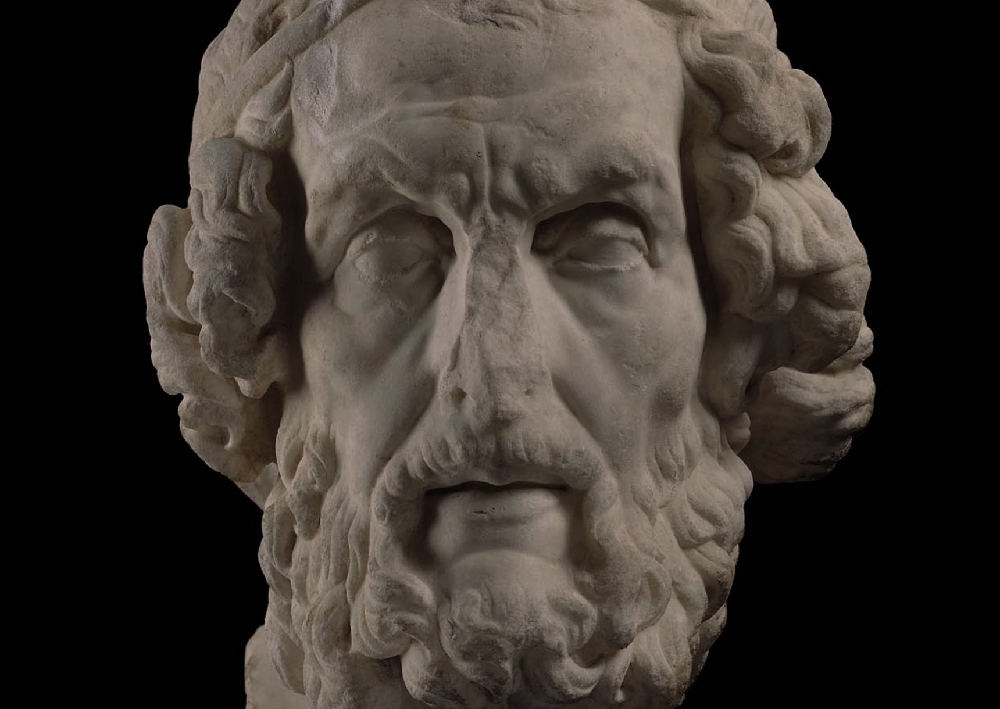
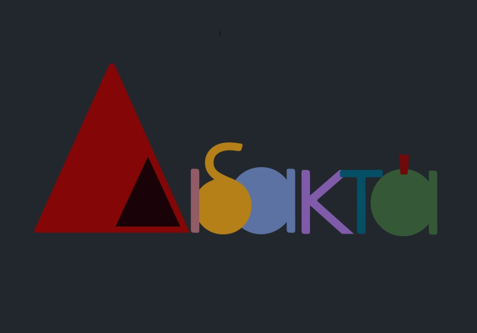
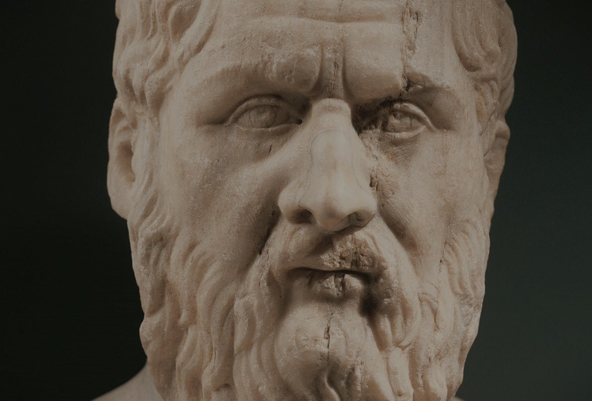
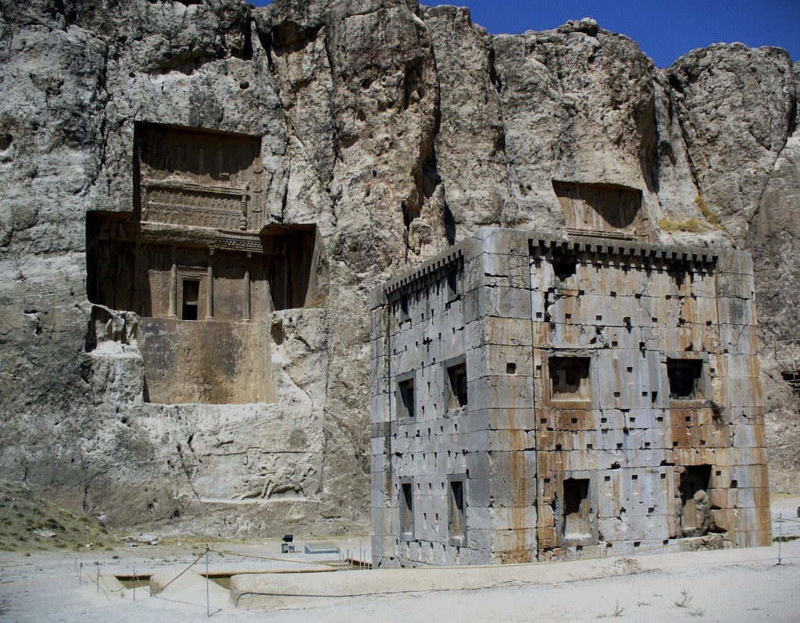
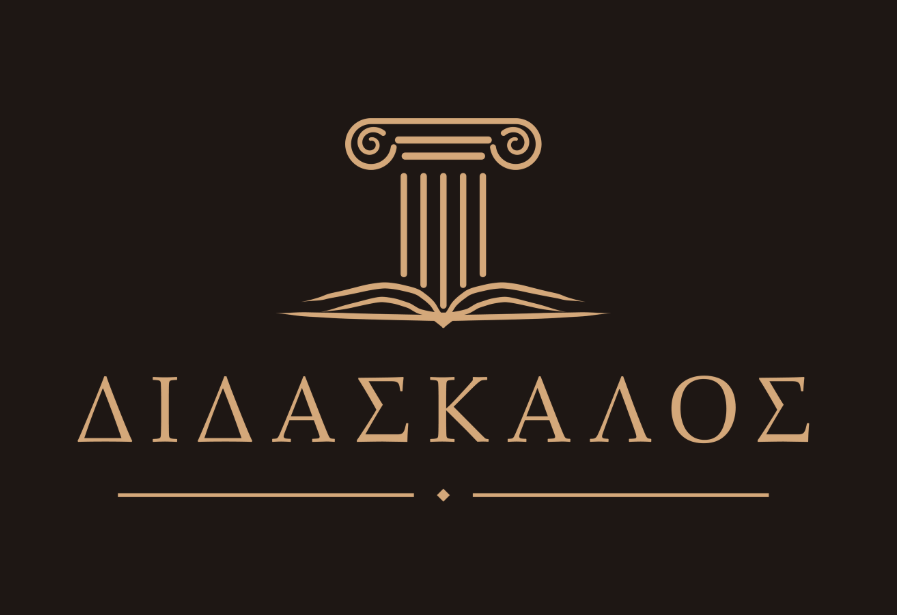
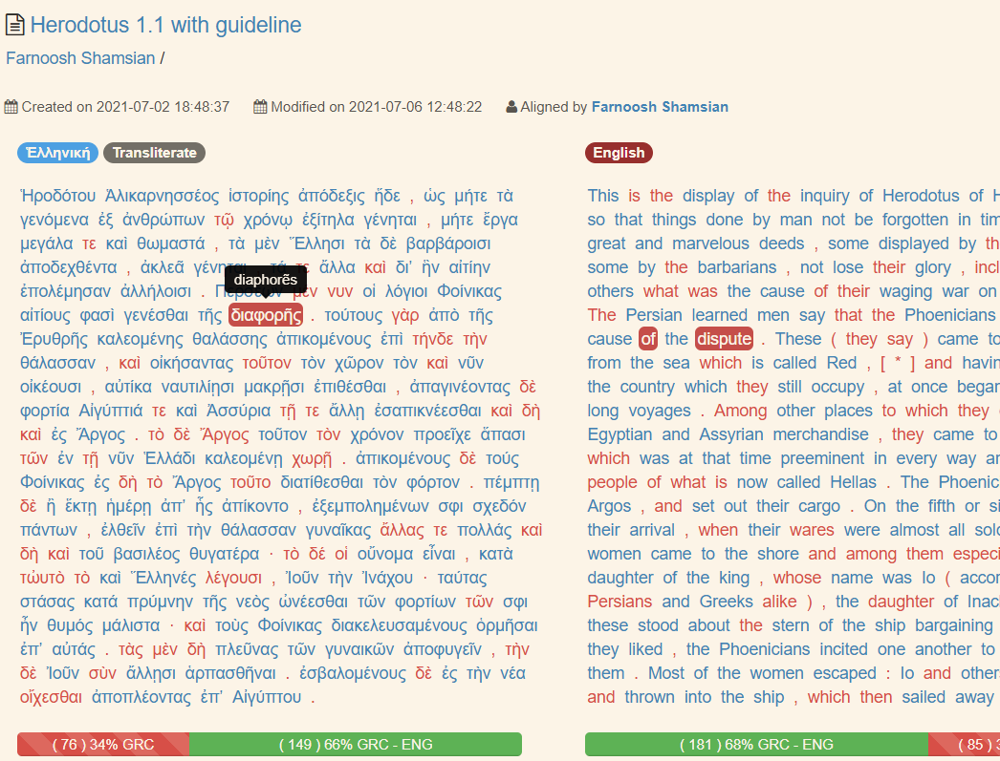

Translation of the Iliad
Our Homer data including Persian and Kurdish translations of book one of the Iliad, aligned at word-level to the UD treebanks
Here I share a selection of the content, open data, and educational resources I have produced for my courses and research projects, including Didakta Grammar for Annotation, datasets, alignments, and other educational resources.
This selection focuses primarily on open educational resources for Ancient Greek with a particular emphasis on Persian-speaking learners, but I also share openly available datasets for related topics. For more information on my research projects and publications, please visit the Publications page.

Our Homer data including Persian and Kurdish translations of book one of the Iliad, aligned at word-level to the UD treebanks

Access the English version of Didakta on Zenodo. For more info on the Persian, Kurdish and Portuguese version, see the description on Zenodo.

Our Persian translations of Plato's Crito in three versions, based on the students' translations who participated in an Ancient Greek translation course

Greek, Middle Persian, and Parthian versions of the inscription aligned at both sentence and word levels, and manually extracted named entities.

A tool in the making for a frequency-based Ancient Greek grammar textbook from treebanks and modular lessons. It is currently in the early stages of development, but you can check it out on GitHub!

I am a longtime collaborator and supporter of the Ugarit Translation Alignment Project. You can view my alignment contributions here. For more info on the project, see the bibliography section of the website.